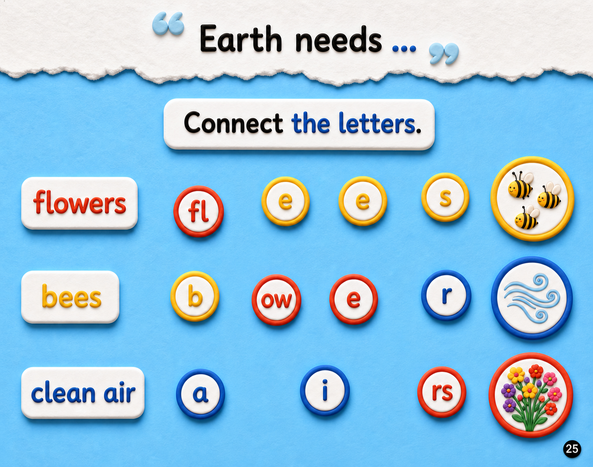

⬅️ Previous Page
📖 Page 6 of 6
🏠 Week 3 Home
Week 3 — Why do we need bees?
🎵 Week Song
🃏 Flashcards

flowers
bees
clean air
🔊
🔊
🔊
fl
ow
e
rs
b
e
e
s
a
i
r
Choose a word.
▶ Start Activity
Wonderful words! ✨
You connected flowers, bees, and clean air.
↻ Try Again
Week 3 Home 🏠
Press Start Activity to begin.
↻ Try Again